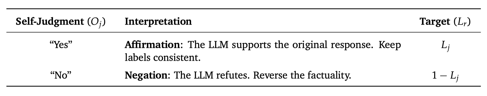
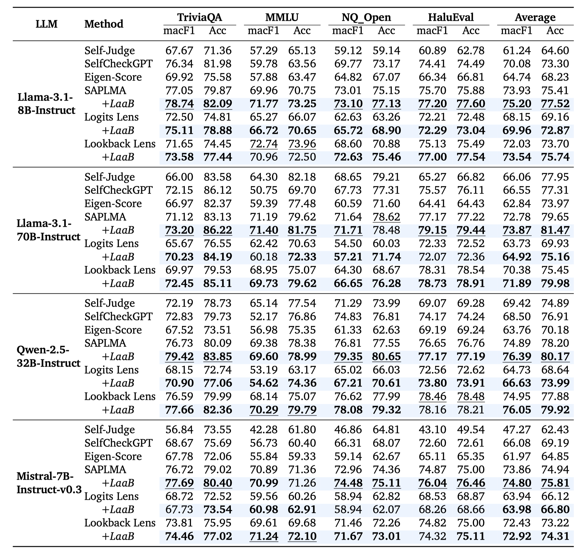
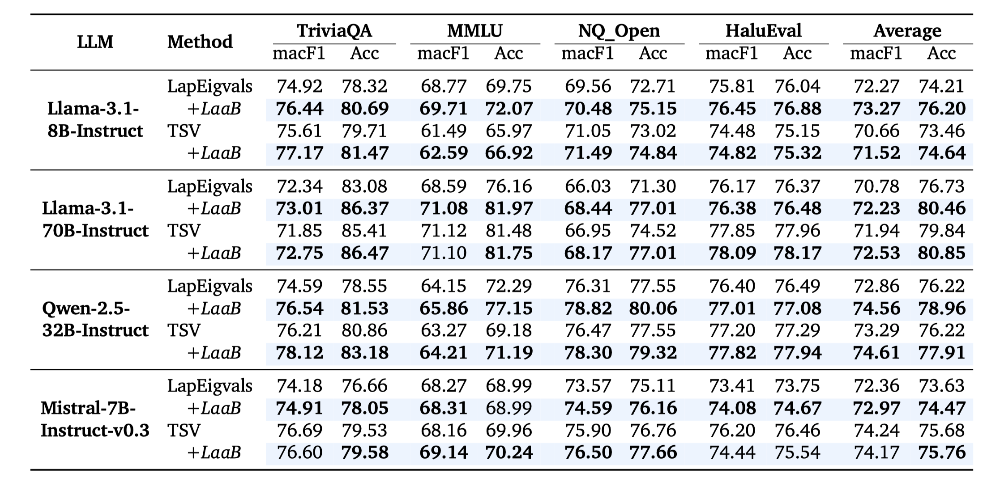
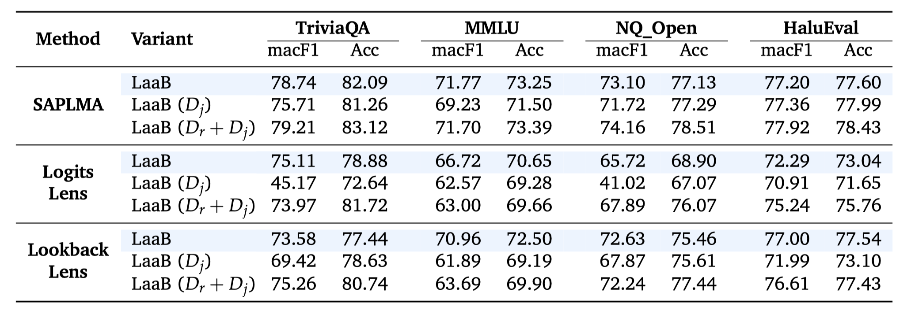
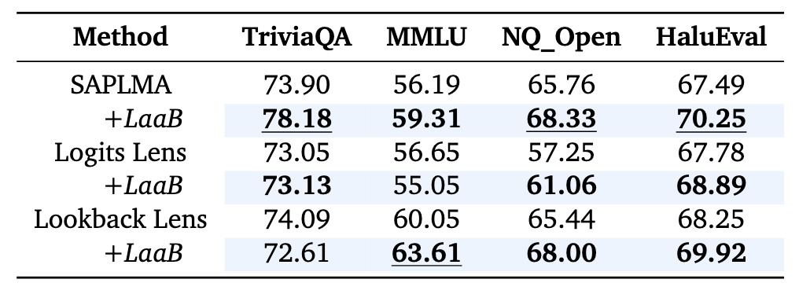
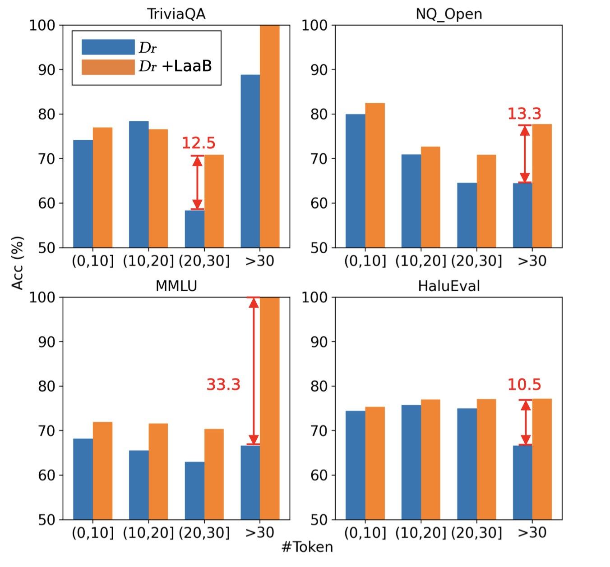

Large Language Models (LLMs) are prone to factual hallucinations, risking their reliability in real-world
applications.
Existing hallucination detectors mainly extract micro-level intrinsic patterns for uncertainty
quantification or elicit macro-level self-judgments through verbalized prompts.
However, these methods address only a single facet of the hallucination, focusing either on implicit neural
uncertainty or explicit symbolic reasoning, thereby treating these inherently coupled behaviors in isolation
and failing to exploit their interdependence for a holistic view.
In this paper, we propose LaaB (Logical
Consistency-as-a-Bridge), a framework that bridges neural
features and symbolic judgments for hallucination detection.
LaaB introduces a "meta-judgment" process to map symbolic labels back into the feature space. By leveraging
the inherent logical bridge where response and meta-judgment labels are either the same or opposite based on
the self-judgment's semantics, LaaB aligns and integrates dual-view signals via mutual learning and enhances
the hallucination detection.
Extensive experiments on 4 public datasets, across 4 LLMs, against 8 baselines demonstrate the superiority
of LaaB.
Abstract

Method

(a) Response Hallucination Modeling
Extracting intrinsic features from the response generation to capture the implicit neural uncertainty.
(b) Self-Judgment Hallucination Modeling
Introducing a meta-judgment process that extracts intrinsic features from the self-judgment
("Yes"/"No") to detect evaluative hallucinations.
(c) Logic-Constrained Mutual Learning

The logical dependency between the response and self-judgment factuality.
Experiments & Results
1. Main Results


Core Conclusion: LaaB yields additional performance gains for baselines in most cases.
Two key dimensions:
1) Diverse Intrinsic Patterns: It effectively augments detection across hidden states, logits, and attention patterns.
2) Model Generalizability: It maintains high efficacy across scales (7B to 70B) and architectures (e.g., LLaMA, Qwen, Mistral).
1) Diverse Intrinsic Patterns: It effectively augments detection across hidden states, logits, and attention patterns.
2) Model Generalizability: It maintains high efficacy across scales (7B to 70B) and architectures (e.g., LLaMA, Qwen, Mistral).
2. Variant Analysis

Core Conclusion: The intrinsic patterns of responses remain the most informative cues. LaaB
efficiently distills the benefits of the judgment view into the response detector Dr during
training, enabling high-performance detection using only Dr at inference time.
3. Cross-Dataset Generalization

Core Conclusion: By encouraging logical agreement across two views, LaaB pushes the detector
toward evidence that transfers across datasets, appearing less sensitive to dataset-specific spurious cues and
generalizing more reliably to unseen benchmarks.
4. Further Analysis


Core Conclusion:
1) Prediction Transitions: LaaB corrects a substantial portion of samples originally misclassified by the response detector Dr, successfully transferring hallucination detection knowledge from the self-judgment view. It preserves most correct predictions and can even rectify instances where both views initially failed.
2) Length Intervals: LaaB brings accuracy improvements across most intervals, with particularly notable gains for longer text sequences. The self-judgment acts as a factual summary that compresses response-level factuality into a single token, mitigating representation sparsity and noise in long responses.
1) Prediction Transitions: LaaB corrects a substantial portion of samples originally misclassified by the response detector Dr, successfully transferring hallucination detection knowledge from the self-judgment view. It preserves most correct predictions and can even rectify instances where both views initially failed.
2) Length Intervals: LaaB brings accuracy improvements across most intervals, with particularly notable gains for longer text sequences. The self-judgment acts as a factual summary that compresses response-level factuality into a single token, mitigating representation sparsity and noise in long responses.
Contributions & Conclusion
- Concept: We propose to view the LLM's self-judgment as a special response that can itself be checked for hallucination, whose result bridges a logical constraint enabling integration of dual-view predictions.
- Method: We design LaaB, which bridges prediction signals from both intrinsic patterns and self-judgments, and builds a mutual learning framework for accurate hallucination detection.
- Performance: Experiments on 4 datasets, across 4 LLMs, against 8 baselines show LaaB effectively enhances hallucination detection without significant additional inference cost.
Summary: We introduced LaaB (Logical Consistency-as-a-Bridge), a framework
that bridges micro-level intrinsic neural patterns and macro-level symbolic self-judgments for LLM hallucination
detection. By introducing a "meta-judgment" process and enforcing the inherent logical constraint via mutual
learning, LaaB improves hallucination detection for most base models without significant additional inference
cost.